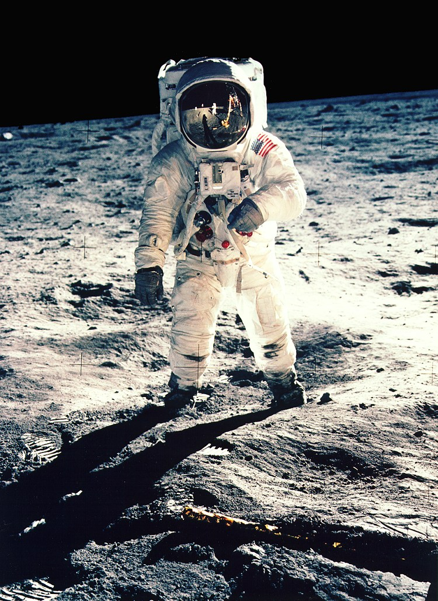

01
Saturn V
A three-stage rocket about 110 metres tall. It launched every Apollo crew that flew to the Moon.
Apollo, 1969–1972
Between July 1969 and December 1972, six Apollo crews landed on the Moon. Space Notes tells the story of each landing in plain words, with the numbers students ask about most.

The first landing
Apollo 11 launched on 16 July 1969. Four days later the lunar module Eagle landed in the Sea of Tranquility with Neil Armstrong and Buzz Aldrin on board. Michael Collins stayed in lunar orbit in the command module Columbia.
Armstrong and Aldrin spent about two and a half hours outside. They collected rock and soil samples and set up experiments. The crew returned to Earth on 24 July 1969.
Read about the other five landingsThe machines
01
A three-stage rocket about 110 metres tall. It launched every Apollo crew that flew to the Moon.
02
The capsule where the crew lived on the way to the Moon and back. It was the only part that returned to Earth.
03
It carried two astronauts down to the surface and later took them back up to the command module.
04
A battery-powered car used on Apollo 15, 16 and 17 to travel farther from the lunar module.
05
A pressurised suit with a backpack that supplied oxygen and cooling water during each moonwalk.
06
Flight controllers in Houston, Texas, followed every mission and spoke to the crew by radio.